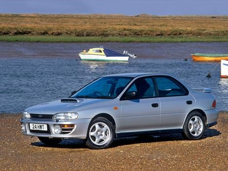

Subaru Impreza WRX STI
La reputación de Subaru en el mundo del rally, se debe a este modelo. De hecho, gracias a la enorme cantidad de victoria, su nombre está asociado
al mítico Colin McRae. La primera generación de este Impreza potenciado por Subaru Technica International (STI), que dependiendo de la región donde
se comercializaba, el motor bóxer de cuatro cilindros turboalimentado de 2.0 Litros, podía entregar una potencia de entre 211 a 280 Hp. Cifras bastante
respetables, que, aunadas a un peso contenido de 1,240 kg, así como a un sistema de tracción integral, le conferirían una aceleración tan buena, que ponía
en aprietos a varios deportivos europeos.
carro stock

carro modificado
volver